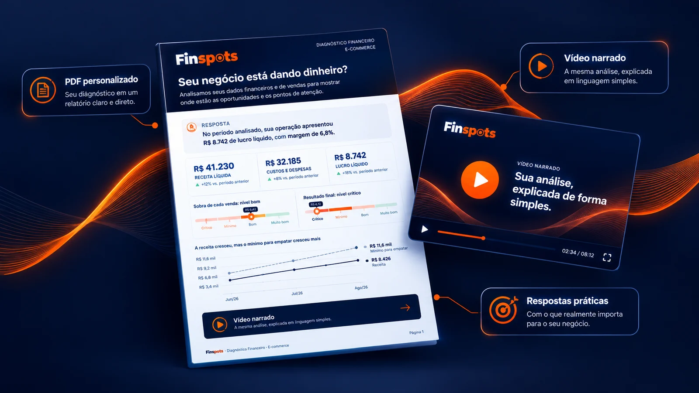

O Diagnóstico Financeiro lê os números da sua loja e responde, em linguagem simples, as perguntas que todo dono de loja faz.
Em cada resposta, o motivo. No final, o que fazer primeiro.
Você envia os dados. Nós fazemos a análise. Você recebe as respostas.
Sua loja online pode vender todos os dias e, ainda assim, você não saber quanto realmente sobra.
O dinheiro entra. Mas também sai: fornecedores, taxas, impostos, fretes, anúncios e outras despesas.
Quando tudo isso está espalhado, o faturamento não conta a história completa.
Quando o controle é frágil, o problema costuma aparecer no caixa antes de aparecer no faturamento.
Você sabe quanto vendeu.
Mas sabe quanto realmente ganhou?
E sabe se o dinheiro vai estar na conta quando os boletos vencerem?
Talvez alguma destas frases já tenha passado pela sua cabeça:
O problema não é falta de dados.
É falta de resposta.
Está no que os seus números já dizem.
O Diagnóstico Financeiro cruza os dados da sua operação e entrega o resultado pronto.
Você não precisa saber quais cálculos fazer.
Não precisa passar horas organizando números.
E não precisa interpretar dezenas de indicadores sozinho.
A conta fica com a gente. Você vê a resposta.
Para cada pergunta sobre a sua loja, o Diagnóstico mostra:
O que está acontecendo.
Por que aconteceu.
O que isso significa para a sua loja.
No final, as ações recomendadas: o que fazer primeiro, passo a passo.
A gente não dá opinião sobre o seu negócio. Mostra o que os dados mostram, seja o resultado bom ou ruim.
Os dados não mentem.
E, quando estão claros, o próximo passo fica óbvio.
Você envia as informações dos últimos 3 meses completos da sua operação, do jeito que tiver: relatórios das plataformas, extratos bancários, planilhas ou até os números anotados.
Não precisa organizar nada. Quanto mais informações você enviar, mais completa será a análise.
Organizamos os dados mês a mês, cruzamos financeiro, vendas e marketing, acompanhamos como cada número mudou no período e comparamos com o que a sua própria loja precisa para se pagar.
Um PDF personalizado + vídeo narrado, com as perguntas da sua loja respondidas, as prioridades para agir primeiro e a resposta para a sua maior dúvida.
Você envia os dados.
Nós fazemos a análise.
Você recebe as respostas.
Respondidas com os números da sua loja.
O Diagnóstico Financeiro é organizado em três áreas. Cada uma tem as suas perguntas.
As duas primeiras entram para quem anuncia. A meta de faturamento entra para toda loja: mostra quanto cada canal precisa vender para pagar os anúncios com o dinheiro da própria loja.
A cada novo Diagnóstico, você recebe o comparativo com o anterior: o que melhorou, o que piorou e se as prioridades saíram do papel. O Diagnóstico pode ser refeito no mínimo a cada 3 meses, o tempo de fechar um novo período completo.
Você não precisa interpretar a planilha.
Precisa entender o seu negócio.
A análise é completa quando os dados são completos. Se algum dado não for enviado, a pergunta que depende dele aparece como não realizada, com o motivo. Nada é inventado para preencher espaço.
A loja física entra no Diagnóstico, mas com perguntas só dela.
Quem tem loja física recebe uma seção especial, com as próprias perguntas. Diferente dos canais que só existem na internet, a loja física também desperta atenção para outras questões:
Uma resposta simples.
Existe muita coisa acontecendo por trás dos seus números.
Você não precisa receber toda essa complexidade.
Nós fazemos a análise. Você recebe o que precisa saber para agir.
Recebe respostas que consegue usar.

Pronto para usar: não tem curva de aprendizado para colocar as recomendações em prática.
Este é um exemplo completo, feito para uma loja modelo. É exatamente o formato que você vai receber, com os números da sua operação.
O Diagnóstico de uma loja modelo, apresentado card a card.
Exemplo ilustrativo com dados fictícios de uma loja modelo.
O Diagnóstico Financeiro é para você se:
Você já tem os dados. A Finspots faz o trabalho de investigar o que eles realmente significam.
Uma análise personalizada do financeiro, das vendas e do marketing da sua loja.
Preço de lançamento · 10 primeiros clientes
Valor especial para os 10 primeiros diagnósticos da Finspots. Depois, o Diagnóstico passa a custar R$ 1.200,00.
Você recebe:
A análise usa 3 meses de dados. O caixa entra quando você envia o extrato bancário, os produtos entram com os relatórios de vendas e a lista de custos, e o marketing entra com os dados de anúncios.
Garantia de 7 dias · 100% do seu dinheiro de volta
Recebeu o Diagnóstico e ele não trouxe a clareza que você esperava? Peça o reembolso em até 7 dias após a entrega e devolvemos o valor integral.
Dúvida antes de decidir? Fale com a gente no WhatsApp
O Diagnóstico desta página analisa até 3 canais de venda. Para analisar todos os canais da sua loja juntos, fale com a gente: montamos um orçamento para a sua operação.
Pedir orçamento no WhatsAppVocê recebe o PDF e o vídeo, analisa tudo com calma e decide.
Se em até 7 dias após a entrega você sentir que o Diagnóstico não entregou a clareza esperada, devolvemos 100% do valor pago.
Basta pedir pelo WhatsApp. Sem burocracia. A garantia está descrita nas Condições de Contratação.
Sabemos que enviar os dados da sua loja exige confiança. Por isso, cuidamos deles com o mesmo rigor com que fazemos a análise.
Seus dados servem apenas para montar o seu Diagnóstico. Não vendemos, não alugamos e não usamos para nenhuma outra finalidade.
Você pode pedir a qualquer momento acesso, correção ou exclusão dos seus dados, direto pelo WhatsApp.
Sem ele, só a pergunta sobre o dinheiro em conta fica de fora. Você decide o que compartilhar.
O PDF e o vídeo ficam em uma pasta no Google Drive, e o link é enviado só para você, pelo WhatsApp, nunca de forma pública. O site usa conexão criptografada (HTTPS) e não tem cookies de rastreamento.
Detalhes na nossa Política de Privacidade.
A Finspots foi fundada por Helaynne Alessandra, pesquisadora, especialista em marketing corporativo e analista financeira, com mais de 6 anos de experiência e diversos projetos realizados, incluindo análises financeiras de negócios locais.
A Finspots nasceu com foco em lojas online, uma das operações mais complexas de administrar: são muitos dados, espalhados em diferentes plataformas e painéis, que podem acabar se tornando uma barreira para quem precisa tomar decisões.
Muitas lojas online de pequeno e médio porte fecham mesmo faturando bem, porque a falta de clareza sobre os números pode esconder problemas financeiros até que seja tarde.
A Finspots existe para transformar essa complexidade em respostas claras, com uma análise feita no seu tempo e com a qualidade que o seu negócio precisa.
Cada diagnóstico segue o mesmo método e o mesmo padrão de qualidade.
PDF e vídeo para ver quando quiser, sem reunião e sem pressão.
Em cada pergunta: o que está acontecendo e por que aconteceu. No final, o que fazer.
Entregamos respostas, não planilhas.
Não. O relatório foi feito para ser entendido por quem não é da área. Ele usa a linguagem do dia a dia da loja, sem termos de analista, e cada número vem explicado.
O essencial: os números dos últimos 3 meses completos: faturamento, devoluções, custo dos produtos, frete e embalagem, custos fixos, pró-labore, número de pedidos e as vendas e comissões de cada canal.
Com esses dados, já é possível responder se o negócio está dando dinheiro, quais são os maiores custos e quais canais deixam lucro.
Para uma análise completa:
Não precisa montar planilha: você envia do jeito que tiver e nós organizamos. O que não for enviado fica de fora, e o relatório mostra o que faltou.
Depois do pagamento, o formulário mostra campo a campo o que preencher.
Não é obrigatório, mas sem ele a pergunta sobre o dinheiro em conta fica de fora.
O extrato mostra o caixa de verdade. Sem ele, o Diagnóstico responde as perguntas de resultado, custos, vendas e marketing, mas não a de quanto tempo o dinheiro em conta dura.
Todo banco permite exportar o extrato em poucos cliques, de preferência no formato OFX. Você envia do jeito que vier, sem precisar classificar nada. Nós organizamos cada entrada e saída.
Os extratos são usados apenas para a análise.
Você recebe um PDF personalizado + vídeo narrado.
O PDF responde até 12 perguntas sobre a sua loja, em três áreas: Financeiro, Vendas e Marketing. Depois mostra o que os números dizem juntos, a resposta para a sua maior dúvida, as prioridades em ordem, com o passo a passo, e as tendências para o próximo mês.
O vídeo conduz pelo resultado, um card por pergunta.
Sem problema. As perguntas sobre os anúncios só entram para quem anuncia. Mesmo sem anunciar, o Diagnóstico mostra a meta de faturamento para investir em anúncios com o dinheiro da própria loja. Financeiro e Vendas continuam sendo o centro da análise.
O Diagnóstico desta página analisa até 3 canais de venda. Para analisar todos os canais juntos, chame no WhatsApp: fazemos um orçamento para a sua operação e enviamos o link de pagamento e o formulário próprios.
O Diagnóstico analisa 3 meses completos de dados da sua operação: 3 meses fechados e seguidos, que você escolhe no formulário (normalmente, os três últimos). O mês em andamento fica de fora, porque ainda não fechou. Cada mês é analisado separadamente, então dá para ver a trajetória da loja, e não só a foto de um mês que pode ter sido fora da curva.
Sim. O Diagnóstico pode ser refeito no mínimo a cada 3 meses, o tempo de fechar um novo período completo, para acompanhar a evolução da loja e conferir se as ações deram resultado. A partir do segundo, o relatório ganha um comparativo com o anterior: o que melhorou, o que piorou e se as prioridades saíram do papel.
Não. O Diagnóstico ajuda você a entender a situação financeira e operacional da sua loja online. Ele não substitui serviços contábeis, fiscais ou obrigações legais.
Até 7 dias úteis após a confirmação do pagamento e o recebimento completo dos dados necessários.
Você tem 7 dias após receber o Diagnóstico para avaliar a entrega. Se entender que ele não trouxe a clareza esperada, é só pedir pelo WhatsApp e devolvemos 100% do valor pago.
Agora precisa das respostas.
Sua loja online já gera números todos os dias.
Faturamento. Vendas. Custos. Despesas. Anúncios. Taxas. Prazos. Saldo no banco.
O Diagnóstico Financeiro transforma tudo isso em respostas.
Como sua loja está.
O que merece atenção.
E por onde começar.
Entregamos respostas, não planilhas.